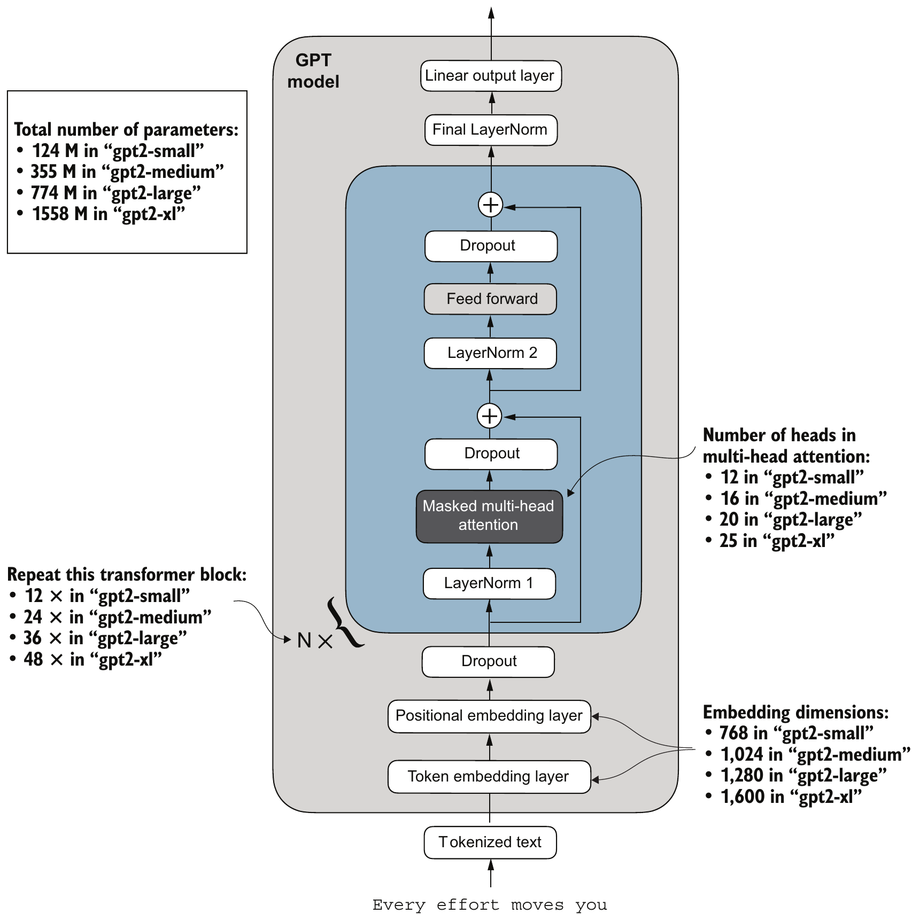

Outline
학습한 GPT로 시작 문맥(생성의 출발점이 되는 입력 문장)을 이어 쓰는 생성 반복, 파라미터의 저장·재로딩과 체크포인트, 사전학습 파라미터의 필요성
| 선행 지식 | 선행 지식만으로 남는 문제 | 새로 배울 내용과 역할 |
|---|---|---|
| argmax로 다음 토큰 1개 예측(7·9주차), 자기회귀 생성의 개념(4주차) | 자기회귀 생성의 코드 미구현, 1회 예측만으로는 이어쓰기 불가 | 생성 반복(3~5장): 자기회귀 생성의 코드 구현, 매번 확률 최댓값 선택 = greedy decoding |
| AdamW 학습 루프(9주차) | 학습한 파라미터가 메모리에만 존재, 세션 종료 시 재학습 필요 | state_dict 저장·재로딩(6~9장), 체크포인트(10~11장): 이름별 파라미터 텐서 사전과 optimizer 상태(AdamW 이동평균)의 파일 보관 |
| 단편소설 한 편으로 학습한 GPT의 과적합(9주차) | 작은 데이터 학습의 한계(과적합) | 사전학습 파라미터(pretrained weight)의 필요성(12장): OpenAI(GPT-2를 공개한 AI 기업)의 GPT-2, 활용 전제 = 같은 구조·같은 shape의 GPTModel |
학습한 GPT(모델 A)로 시작 문맥을 이어 쓰는 강의 예제
모든 장표의 공통 예제: 같은 시작 문맥을 모델 A로 이어 쓰고, 저장·재로딩 전후의 파라미터 상태별로 비교
| 항목 | 내용 |
|---|---|
| 시작 문맥 | 생성의 출발점이 되는 입력 문장 “Every effort moves you” = 토큰 4개 |
| 모델 A | 9주차 학습 GPT: The Verdict 학습 데이터(앞 90%)로 10 epoch(90회 갱신)를 마친 GPTModel, 학습 손실 0.2977·검증 손실 6.5264 |
| 처리 | 생성 반복(greedy decoding) → 파라미터 저장·재로딩 → 체크포인트와 학습 재개 → 사전학습 파라미터의 필요성 |
| 예제 결과 | 모델 A의 greedy 25토큰 이어쓰기, model.pth·체크포인트 파일, 재로딩 전후의 손실·출력 비교 |
코드 위치: 9주차 학습 코드를 실행한 Python 세션에 이어 실행(이후 장표 공통)
import torch, tiktoken
tokenizer = tiktoken.get_encoding("gpt2")
# 9주차 세션: GPTModel, model(모델 A), optimizer
idx = torch.tensor([tokenizer.encode("Every effort moves you")])
print(idx, idx.shape)tensor([[6109, 3626, 6100, 345]]) torch.Size([1, 4])idx[1, 4]: 문장 1개 × 토큰 4개, GPT 입력의 batch 축 유지- 모델 A의 손실: 학습·검증 데이터 전체 batch의 평균, 마지막 로그 Step 85(검증 6.452) 뒤 4회 더 갱신한 최종 상태
생성 반복의 첫 단계: 마지막 위치의 다음 토큰 선택
문제: GPT 한 번의 계산은 위치마다 다음 토큰 1개만 예측 → 생성 반복의 첫 반복을 한 줄씩 실행해 새 토큰 1개를 얻는 과정
model.eval()
idx_cond = idx[:, -256:]
with torch.no_grad():
logits = model(idx_cond)
print(idx_cond.shape, logits.shape)
logits = logits[:, -1, :]
probas = torch.softmax(logits, dim=-1)
idx_next = torch.argmax(probas, dim=-1, keepdim=True)
print(logits.shape, idx_next, tokenizer.decode(idx_next[0].tolist()))torch.Size([1, 4]) torch.Size([1, 4, 50257])
torch.Size([1, 50257]) tensor([[760]]) knowmodel.eval(): dropout을 끈 평가 상태(9주차), 같은 입력 → 매번 같은 logitskeepdim=True: argmax 결과의 축 유지 →idx_next[1, 1]tolist(): 텐서 → Python 리스트(decode입력)
| 코드 | 첫 반복의 값 |
|---|---|
idx_cond | 최근 256토큰(문맥 길이)까지, 첫 반복 [1, 4] |
model(idx_cond) | 위치 4개마다 어휘 50,257개의 점수 [1, 4, 50257] |
logits[:, -1, :] | 마지막 위치 “you”의 점수 [1, 50257] |
softmax → argmax | 1위 " know" 0.2020 > 2위 '?"' 0.1879 → ID 760 |
예측 토큰의 이어붙이기와 반복별 입력 shape
자기회귀 생성(4주차: 직전 생성 결과를 다음 예측의 입력에 포함)의 코드: 선택한 토큰을 torch.cat으로 입력 끝에 붙이고, 길어진 입력으로 다시 계산
out = idx
for step in range(1, 3):
with torch.no_grad():
logits = model(out)
probas = torch.softmax(logits[:, -1, :], dim=-1)
idx_next = torch.argmax(probas, dim=-1, keepdim=True)
out = torch.cat((out, idx_next), dim=1)
print(step, out.shape, tokenizer.decode(out[0].tolist()))1 torch.Size([1, 5]) Every effort moves you know
2 torch.Size([1, 6]) Every effort moves you know,"idx_next[1, 1](문장 1개 × 토큰 1개, 3장의keepdim=True) →dim=1(토큰 축)으로 이어붙이기 가능
| 반복 | 입력 out | 마지막 위치 | 1위 > 2위 확률 | 붙인 뒤 |
|---|---|---|---|---|
| 1 | [1, 4] | you | " know" 0.2020 > '?"' 0.1879 | [1, 5] |
| 2 | [1, 5] | know | ',"' 0.0942 > ";" 0.0370 | [1, 6] |
- 반복마다 길어진 입력 전체를 다시 계산, 새 마지막 위치의 확률로 다음 토큰 선택
- 앞 반복의 선택 = 다음 반복의 문맥: 2번째 반복의 1위 ',"'는 1번째에 붙인 " know" 뒤의 예측
생성 반복 함수 generate_text_simple
3·4장의 단계를 함수로 묶은 생성 반복: 반복 횟수 max_new_tokens, 입력 자르기 idx[:, -context_size:]
def generate_text_simple(model, idx, max_new_tokens, context_size):
for _ in range(max_new_tokens):
idx_cond = idx[:, -context_size:]
with torch.no_grad():
logits = model(idx_cond)
logits = logits[:, -1, :]
probas = torch.softmax(logits, dim=-1)
idx_next = torch.argmax(probas, dim=-1, keepdim=True)
idx = torch.cat((idx, idx_next), dim=1)
return idx
out = generate_text_simple(model, idx, max_new_tokens=25, context_size=256)
print(out.shape, tokenizer.decode(out[0].tolist()))torch.Size([1, 29]) Every effort moves you know," was one of the axioms he laid down across the Sevres and silver of an exquisitely appointed lun입력 자르기의 작은 예
t [1, 5] = 문장 1개 × 토큰 5개를 흉내 낸 입력, 11~15 = 실제 단어가 아닌 임의 토큰 ID
t = torch.tensor([[11, 12, 13, 14, 15]])
print(t[:, -3:])tensor([[13, 14, 15]])t[:, -3:]: 문맥 길이 3을 가정한 자르기, 끝 3토큰 유지·앞 2토큰 제외context_size256 = 모델 A의 문맥 길이(pos_emb.weight256행)- 이 예제: 최대 28토큰 입력 < 256 → 자르기 미발생
세션 메모리의 파라미터와 state_dict
문제: 학습한 파라미터는 Python 세션의 메모리에만 존재, 세션 종료 시 9주차 학습(CPU 241.6초)부터 재실행 → 파라미터 텐서를 이름별로 모은 state_dict
sd = model.state_dict()
print(len(sd))
for name, t in list(sd.items())[:3]:
print(name, tuple(t.shape))173
tok_emb.weight (50257, 768)
pos_emb.weight (256, 768)
trf_blocks.0.att.mask (256, 256)- 용어 대응: weight = PyTorch 코드(
.weight)가 학습되는 텐서를 부르는 이름, 이 덱의 표준 용어 = 파라미터(9주차와 동일)
| 항목 | 내용 |
|---|---|
| state_dict | 층 이름 경로 → 텐서의 사전(dict) |
| 이름 경로 읽기 | trf_blocks.0.att.W_query.weight = 0번 block → attention → Query 변환 층 → 파라미터 행렬 [768, 768] |
| 항목 173개 | 파라미터 텐서 161개 + block별 causal mask 12개(학습하지 않는 고정 행렬) |
| 위치 | sd도 세션 메모리의 객체, 파일 기록 = 다음 장 |
torch.save로 만드는 파라미터 파일
state_dict를 파일로 기록: 세션이 끝나도 디스크에 남는 기록, 파일에 든 것 = 이름별 텐서 값
torch.save(model.state_dict(), "model.pth")
print(len(torch.load("model.pth", map_location=device)))173torch.save(객체, 경로): 객체를 파일로 기록,.pth= PyTorch 파일의 관례 확장자torch.load(경로, map_location=device): 파일 → 사전, 현재 장치(이 실행은 CPU)로 읽기
| 구분 | 세션의 model | 파일 model.pth |
|---|---|---|
| 만든 시점 | 9주차 학습 실행 | torch.save 실행 |
| 내용 | GPTModel 객체 | state_dict의 173항목(텐서 값) |
| 세션 종료 후 | 소멸 | 디스크에 유지 |
| 크기 | – | 652,874,815바이트 ≈ 값 163,206,144개 × 4바이트(float32 = 32비트 실수) |
재로딩 대상: 같은 설정의 새 GPTModel
새 세션의 재현: 파일만 남은 상태에서 변수 model을 같은 설정의 새 GPTModel로 교체 → 학습 결과가 들어 있는가
model = GPTModel(GPT_CONFIG_124M)- 새 GPTModel의 파라미터: 무작위 초기값(학습 결과 아님)
- 같은 설정 = 저장 파일과 같은 이름·같은 shape의 파라미터, 이름·shape 불일치 시 불러오기 오류
- 6장의
sd: 저장 전 값을 보관한 사전(다음 장의 비교 기준)
| 모델 상태 | 검증 손실 | greedy 25토큰 출력 |
|---|---|---|
저장 전 model(모델 A) | 6.5264 | know," was one of the axioms … lun |
| 새 GPTModel(seed 123) | 10.9811 | rentingetic …(의미 없는 토큰 열) |
- seed 123: 9주차 학습 시작과 같은 초기값, 10.9811 = 9주차의 학습 전 검증 손실
load_state_dict 재로딩과 동일성 확인
해결: 8장의 새 GPTModel에 model.pth의 값을 덮어써 저장 전과 값·손실·greedy 출력 비교
model.load_state_dict(
torch.load("model.pth", map_location=device))
new = model.state_dict()
print(all(torch.equal(sd[k], new[k]) for k in sd), len(new))
model.eval()
with torch.no_grad():
print(calc_loss_loader(val_loader, model, device))
out = generate_text_simple(model, idx, 25, 256)
print(tokenizer.decode(out[0, 4:].tolist()))True 173
6.526404857635498
know," was one of the axioms he laid down across the Sevres and silver of an exquisitely appointed lun| 모델 상태 | 검증 손실 | greedy 25토큰 출력 |
|---|---|---|
저장 전 model | 6.5264 | know," was one of the axioms … lun |
| 새 GPTModel(seed 123) | 10.9811 | rentingetic … |
model.pth 재로딩 | 6.5264 | 저장 전과 같은 25토큰 |
load_state_dict: 이름이 같은 텐서끼리 값 복사, 이름·shape 불일치 시 오류sd: 6장의 저장 전 state_dict,torch.equal: shape·값이 모두 같으면 Trueout[0, 4:]: 시작 문맥 4토큰 뒤의 생성 25토큰- greedy decoding: 같은 입력·같은 파라미터 → 매 실행 같은 출력, 출력 일치 = 같은 파라미터의 확인 수단
True 173)·손실·greedy 출력 일치, 절차 = 같은 설정의 GPTModel → load_state_dict → eval(dropout 끔)optimizer 상태와 체크포인트 파일
문제: model.pth에는 파라미터만 존재, AdamW가 파라미터마다 누적한 기울기 이동평균은 미포함 → 파라미터와 optimizer 상태를 함께 저장한 체크포인트(checkpoint)
torch.save({"model_state_dict": model.state_dict(),
"optimizer_state_dict": optimizer.state_dict()},
"model_and_optimizer.pth")
checkpoint = torch.load("model_and_optimizer.pth", map_location=device)
model = GPTModel(GPT_CONFIG_124M)
model.load_state_dict(checkpoint["model_state_dict"])
optimizer = torch.optim.AdamW(model.parameters(), lr=0.0004, weight_decay=0.1)
optimizer.load_state_dict(checkpoint["optimizer_state_dict"])
model.train()- 1~3줄 = 저장(학습 직후 세션), 4줄 이후 = 복원(새 세션): 같은 설정의 모델·optimizer를 만든 뒤 두 state_dict를 각각 불러오기
optimizer 상태(파라미터 텐서 161개마다)
step90: 지금까지의 갱신 횟수exp_avg·exp_avg_sq: 기울기·기울기 제곱의 이동평균(지난 값에 최근 값을 일정 비율로 섞어 갱신한 평균), 각각 파라미터와 같은 shape- 파일 1,952,382,887바이트 ≈
model.pth의 3배
model.train()으로 학습 재개 준비optimizer 상태 복원 여부에 따른 학습 재개
질문: 파라미터만 복원하고 optimizer를 새로 만들어도 학습을 이어 갈 수 있는가 → 같은 체크포인트에서 1 epoch(9 step) 추가 학습
조건: 같은 체크포인트·seed 123(같은 batch 순서), batch 손실 = 그 step에서 갱신 직전에 계산한 학습 batch의 손실, 이 실행 1회의 관찰
| step | 1 | 2 | 3 | 4 | 5 | 6 | 7 | 8 | 9 |
|---|---|---|---|---|---|---|---|---|---|
| optimizer 상태 복원 | 0.44 | 0.29 | 0.41 | 0.45 | 0.39 | 0.38 | 0.38 | 0.44 | 0.54 |
| 새 optimizer(상태 없음) | 0.44 | 0.93 | 0.91 | 0.91 | 0.73 | 0.93 | 0.91 | 0.99 | 0.91 |
관찰
- step 1: 두 실행 모두 0.44(첫 갱신 전 계산이라 같은 값)
- step 2~9: 복원 0.29~0.54, 새 optimizer 0.73~0.99
- epoch 뒤 학습 손실: 복원 0.1961, 새 optimizer 0.3294
원인: 첫 갱신의 이동량
- 이동량 = 갱신 전후 파라미터 값 차의 절댓값, 중앙값: 복원 0.0000406, 새 optimizer 0.000398 ≈ lr
- 새 optimizer: 이동평균 = 현재 기울기 하나뿐 → 기울기가 0이 아닌 파라미터마다 기울기 크기와 무관하게 약 lr만큼 이동
model.pth, 학습 재개 → 체크포인트(상태 없는 AdamW는 첫 갱신 이동량이 약 10배 → 낮춘 손실 재상승)사전학습 파라미터의 필요성과 GPT-2 모델 크기
문제: 학습 토큰 4,612개의 모델 A = 검증 손실 6.5264, greedy 25토큰 중 24토큰이 학습 데이터 문장의 복사(과적합) → 해결 방향: OpenAI가 공개한 GPT-2 사전학습 파라미터의 활용
교재 Figure 5.17: 아래→위 = 토큰화된 텍스트 → 임베딩 → transformer block N회 → 최종 LayerNorm → 출력층, 양옆 상자 = 크기별 차이(라벨 확대 = 오른쪽 표)

| 모델(그림 라벨) | 파라미터 수 | 임베딩 차원 | block 수 | head 수 |
|---|---|---|---|---|
| gpt2-small | 124M | 768 | 12 | 12 |
| gpt2-medium | 355M | 1,024 | 24 | 16 |
| gpt2-large | 774M | 1,280 | 36 | 20 |
| gpt2-xl | 1,558M | 1,600 | 48 | 25 |
- 구조 동일, 임베딩 차원·block 수·head 수만 다름: 7주차 GPT 구조의 설정값만 바꾼 모델
- M = 백만(million): 124M = 약 1억 2,400만 개
- gpt2-small(124M): 9주차 설정
GPT_CONFIG_124M과 임베딩 768·block 12·head 12가 동일
Summary
생성 반복과 greedy decoding → 학습 결과의 파일 보관과 학습 재개 → 사전학습 파라미터의 필요성과 활용 전제
| 개념 | 확인한 역할과 구분 |
|---|---|
| 생성 반복 | 마지막 위치의 예측 토큰을 입력 끝에 붙여 max_new_tokens회 반복, n회 → [1, 4 + n], 문맥 길이 초과분은 앞쪽 토큰 제외 |
| greedy decoding | 매번 확률 최댓값 선택: 같은 입력·같은 파라미터 → 같은 출력, 재로딩 확인 수단 |
| state_dict 저장 | 이름 경로 → 텐서 사전 173항목, torch.save → model.pth(구조 미포함) |
| 재로딩 | 같은 설정 GPTModel → load_state_dict → eval(), 값·손실·출력 일치로 확인(새 GPTModel 10.9811 → 재로딩 6.5264) |
| 체크포인트 | 파라미터 + AdamW 이동평균(약 3배 크기), 학습 재개에 필요(새 optimizer: 첫 갱신 이동량 약 10배) |
| 사전학습 파라미터 | 작은 데이터 학습의 과적합의 해결 방향, GPT-2 네 크기 = 같은 구조·다른 설정값, 활용 전제 = 같은 구조·같은 shape의 GPTModel |
model.pth·체크포인트 파일과 재로딩 확인(7~11장), 사전학습 파라미터 활용의 전제(12장)